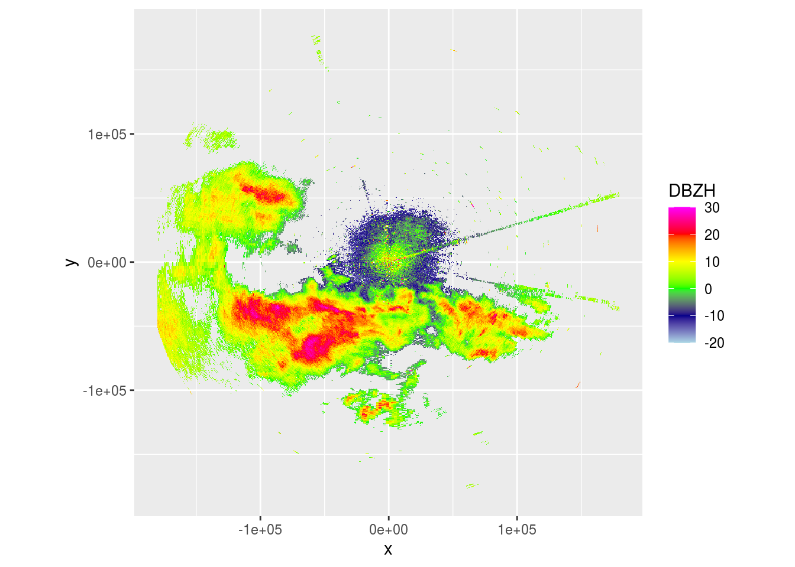

5 EM Interference
pvolfile <- "data/20201002/NLHRW_pvol_20201002T1205_6356.h5"
# pvolfile <- "data/20201001/NLHRW_pvol_20201001T0955_6356.h5"
# pvolfile <- "data/20201001/NLHRW_pvol_20201001T0000_6356.h5"
pvol <- read_pvolfile(file = pvolfile, param = "all")
pvol <- calculate_param(pvol,
ZDRL = 10 ** ((DBZH - DBZV) /10),
DPR = 10 * log10((ZDRL + 1 - 2 * ZDRL^0.5 * RHOHV) / (ZDRL + 1 + 2 * ZDRL^ 0.5 * RHOHV)))## Warning in eval(nn <- (calc[[i]]), x$params): NaNs produced
## Warning in eval(nn <- (calc[[i]]), x$params): NaNs produced
## Warning in eval(nn <- (calc[[i]]), x$params): NaNs produced
## Warning in eval(nn <- (calc[[i]]), x$params): NaNs produced
## Warning in eval(nn <- (calc[[i]]), x$params): NaNs produced
## Warning in eval(nn <- (calc[[i]]), x$params): NaNs produced
## Warning in eval(nn <- (calc[[i]]), x$params): NaNs produced
## Warning in eval(nn <- (calc[[i]]), x$params): NaNs produced
## Warning in eval(nn <- (calc[[i]]), x$params): NaNs produced
## Warning in eval(nn <- (calc[[i]]), x$params): NaNs produced
## Warning in eval(nn <- (calc[[i]]), x$params): NaNs produced
## Warning in eval(nn <- (calc[[i]]), x$params): NaNs produced
## Warning in eval(nn <- (calc[[i]]), x$params): NaNs produced
## Warning in eval(nn <- (calc[[i]]), x$params): NaNs produced
## Warning in eval(nn <- (calc[[i]]), x$params): NaNs produced
ppi <- project_as_ppi(pvol$scans[[1]], range_max = 180000, grid_size = 500)
plot(ppi)

range_coverage <- function(scan) {
s <- as.matrix(scan$params$DBZH)
class(s) <- "matrix"
hasvalue <- s
hasvalue[!is.na(s)] <- 1
coverage <- colSums(hasvalue, na.rm = TRUE)
coverage / dim(s)[1]
}
hist(range_coverage(pvol$scans[[1]]))
calc_linearity <- function(scan) {
s <- as.matrix(scan$params$DBZH)
class(s) <- "matrix"
apply(s, 2, function(d) {
nearestbin <- round(50000 / scan$geo$rscale)
r <- nearestbin:dim(s)[1]
dbzh <- d[r]
data <- data.frame(r = r, dbzh = dbzh) %>% drop_na()
if (nrow(data) > 20) {
m <- lm(dbzh ~ r, data = data)
if (coef(m)[2] > 0) { # Only return non-NA if slope is positive
summary(m)$r.squared
} else {
NA
}
} else {
NA
}
})
}
hist(calc_linearity(pvol$scans[[1]]))
classified_em <- which(calc_linearity(pvol$scans[[1]]) > 0.75 & range_coverage(pvol$scans[[1]]) > 0.75)
classified_em <- sort(unique(c(classified_em - c(1), classified_em, classified_em + c(1))))
classified_em## [1] 72 73 74 75 76 77 90 91 92 99 100 101 102 103
interpolate_em <- function(scan, beams) {
s <- as.matrix(scan$params$DBZH)
class(s) <- "matrix"
consecutive_beams <- split(beams, cumsum(c(1, diff(beams) != 1)))
for (cb in consecutive_beams) {
extract_beams <- c(min(cb) - 1, cb, max(cb) + 1)
m <- s[, extract_beams]
m[is.na(m)] <- -9999
m[, 2:(length(extract_beams) - 1)] <- NA
x <- 1:dim(m)[1] # Ranges
y <- c(1, length(extract_beams)) # Azimuths
z <- t(m[x, y])
xp <- x
yp <- 2:(length(extract_beams) - 1)
ip <- expand.grid(x, yp)
mi <- matrix(interp2(x, y, z, ip[, 1], ip[, 2], method = "nearest"), nrow = length(x))
mi[mi == -9999] <- NA
# Now that we have interpolated NA values using nearest-neighbor, we can interpolate reflectivity
ip2 <- which(!is.na(mi), arr.ind = TRUE)
mp <- interp2(x, y, z, ip2[, 1], ip2[, 2], method = "linear")
mi[cbind(ip2[, 1], ip2[, 2])] <- mp
s[, cb] <- mi
}
scan$params$DBZH <- s
return(scan)
}
plot(interpolate_em(pvol$scans[[1]], classified_em))
p <- pvol
p$scans <- lapply(p$scans, function(x) {
classified_em <- which(calc_linearity(x) > 0.75 & range_coverage(x) > 0.75)
classified_em <- sort(unique(c(classified_em - c(1), classified_em, classified_em + c(1))))
print(classified_em)
if (length(classified_em) > 0) {
x <- interpolate_em(x, classified_em)
}
x
})## [1] 72 73 74 75 76 77 90 91 92 99 100 101 102 103
## [1] 73 74 75 99 100 101 102 103
## [1] 72 73 74 75 90 91 92 99 100 101 102 103 104
## numeric(0)
## [1] 100 101 102 103
## numeric(0)
## numeric(0)
## numeric(0)
## [1] 95 96 97
## numeric(0)
## numeric(0)
## numeric(0)
## numeric(0)
## numeric(0)
## numeric(0)
## numeric(0)
plot(project_as_ppi(p$scans[[4]], grid_size = 500, range_max = 180000))
vp <- calculate_vp(pvolfile, verbose = FALSE)
ppi <- integrate_to_ppi(p, vp, xlim = c(-180000, 180000), ylim = c(-180000, 180000), res = 500, param = "DBZH")## Warning in integrate_to_ppi(p, vp, xlim = c(-180000, 180000), ylim =
## c(-180000, : ignoring 90 degree birdbath scan
plot(ppi)
p <- pvol
identify_em_interference <- function(pvol) {
beams <- lapply(pvol$scans, function(x) {
classified_em <- which(calc_linearity(x) > 0.75 & range_coverage(x) > 0.75)
classified_em <- sort(unique(c(classified_em - c(1), classified_em, classified_em + c(1))))
classified_em
})
elevs <- round(get_elevation_angles(pvol), 1)
beams <- lapply(elevs, function(x) {
identical <- which(elevs == x)
if (length(identical) > 0) {
b <- unique(unlist(beams[identical]))
} else {
NULL
}
})
beams
}
beams <- identify_em_interference(p)
p$scans <- mapply(function(x, y) {
if (length(y) > 0) {
interpolate_em(x, y)
} else {
x
}
}, pvol$scans, beams, SIMPLIFY = FALSE)
ppi <- integrate_to_ppi(p, vp, xlim = c(-180000, 180000), ylim = c(-180000, 180000), res = 500, param = "DBZH")## Warning in integrate_to_ppi(p, vp, xlim = c(-180000, 180000), ylim =
## c(-180000, : ignoring 90 degree birdbath scan
plot(ppi)